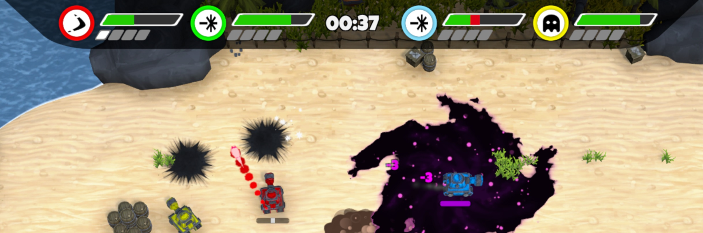
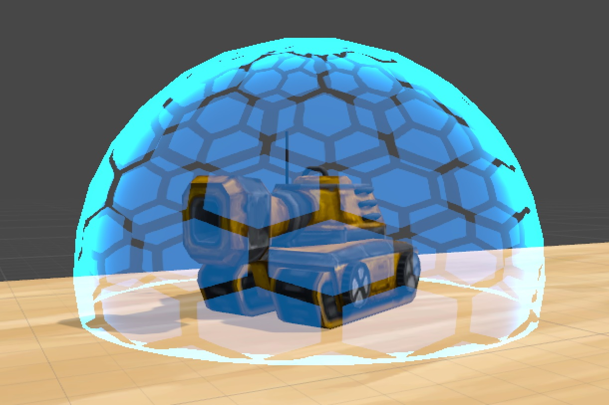
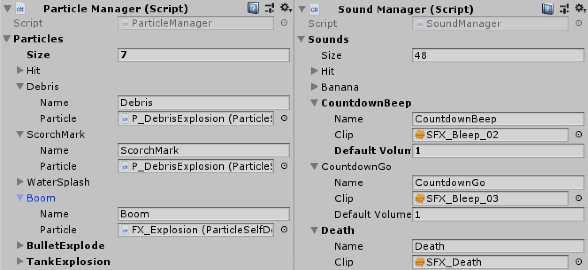

Time Tanks
A team project in Unity by 2 artists, and 3 programmers, created over the span of 11 weeks
Media
Looks neat... but what is it?
Time Tanks was a 5 person project over the span of 11 weeks. The goal was to come up with, and create, a vertical slice for a couch party game. The game would require a main menu, a player select, and the actual gameplay limited to a single level. In addition, the goal of the project was to learn how to work, and plan together as a team. You can find weekly devblogs, documenting our proprogrees, on our Itch.io page. On this portfolio page I will mainly focus on some of my personal contributions to the project. Some of my tasks during this project included:
- Base systems for tanks, bullets, nad pickups
- Programming the ingame HUD
- Writing Unity shaders
- Core gameloop
- Portal mechanics
- Dynamic camera
- Sound and particle managers
- Leading meetings
- Writing weekly devblogs
HUD
During early playtesting, some of the feedback indicated it wasn't always clear to players what was going on. We had temporary health numbers floating above player's tanks, which people found usefull, but was rather ugly. And while we showed a text message when a player picked up a powerup, they often missed it, or couldn't remember if they were currently carrying something, and if so, what it was. It was pretty clear we needed a HUD to show players this info.
One of the artist was experimenting with some different concepts, but we couldn't quite find the right one. At some point I took one of this concepts and quickly cut it up, rearranged it, and showed it to him. He liked it, par some monir tweaks, and our HUD was born. A simple black bar at the top of the screen to keep it our of the way of the playing field. Each player would get a ring in their player's color. An icon inside the ring informs the players what item they are carrying. And to the side of their ring, each player has a health bar, and small blocks that would light up for every round they have won.
One thing that player were still reporting, was they it wasn't always clear when players were taking damage, and how severe the damage was. To solve this I decided to add floating combat text.
Every time a tank takes damage, a damage number pops out off the tank. To indicate where the damage was coming from, I also added a color coding. Damage from bullets would be plain white, but becomes bigger and more red, the higher the damage number. Damage from floor hazards are purple, and dirving into the water creates blue damage numbers.

The final HUD, and damage numbers.
The final HUD, and damage numbers.
Shader Magic
One of the first issues we encountered in this project, was that Unity doesn't have a solid shader editor, unlike Unreal. Our artists were used to creating their shaders in Unreal, but were now unable to do so. As a solution we decided that the artists would design their shaders in Unreal, then sent it to me. In turn, I would translate the design into Unity shader code. I've had some limited experience wiriting Unity shaders, so I could take Unreal nodes, and re-create the meaning behind them. The results weren't completely similiar, but they matched close enough to the original design.

A shield shader, designed by an artist, programmed by me.
A shield shader, designed by an artist, programmed by me.
Managing the managers
During development, different scripts were spawning particles and playing sound clips. The issue was that every script needed a reference to them. This meant that the artist needed to find the correct scripts for their files, and if a one had to be replaced, they had to remember all the files that used it. In addition, codewise, every script was using similar lines of code to spawn their objects.
To solve this issue I created two content managers. Our artist are were now able to add additional files to a single script, each with a unique name. This meant that they no longer had to search through all the scripts, and if they wanted to update a sound they had to only change a single entry. And as developers, we now only had to write a single line of code referencing one of the managers, and request the unique name. This cleaned up code scripts immensly, and was overall way easier to use.

A single location for artists to add files, which programmers can reference by unique name.
A single location for artists to add files, which programmers can reference by unique name.
But in the end... it does actually matter
In the end, programming asside, Time Tanks was an interesting experience. When working on a solo project you can do as you please, but when working in a group, it's important to do it as a team.
Working with artists, but even among programmers, has shown how little words can mean on their own. You can have an amazing concept in mind, tell someone else about it, and ask them to create it, and you might still end up with something different. When working with other people, it's important to make sure you are both on the same wavelength, and check what that are thinking is in fact what you are trying to convey to them.
Something I've learned about myself during this project, is that have little issue stepping forward if the team is in need of direction. People respect my ability to bring forth ideas, make sure everyone is heard, and an agreement is made. I personaly don't find myself to be fit as leadership, but I seem to make a good mediator.
Development Gallery
This gallery contains images made during development.